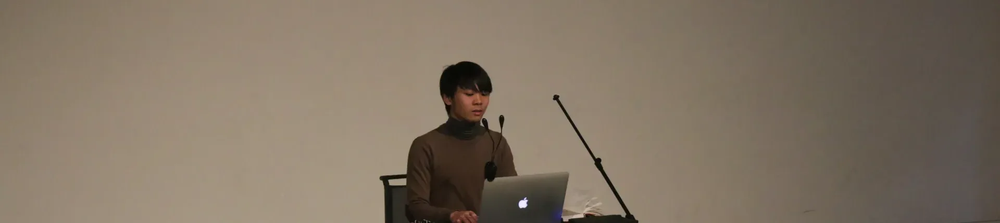
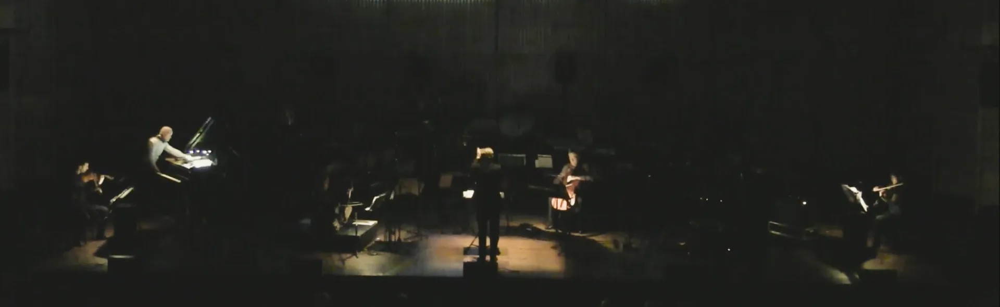
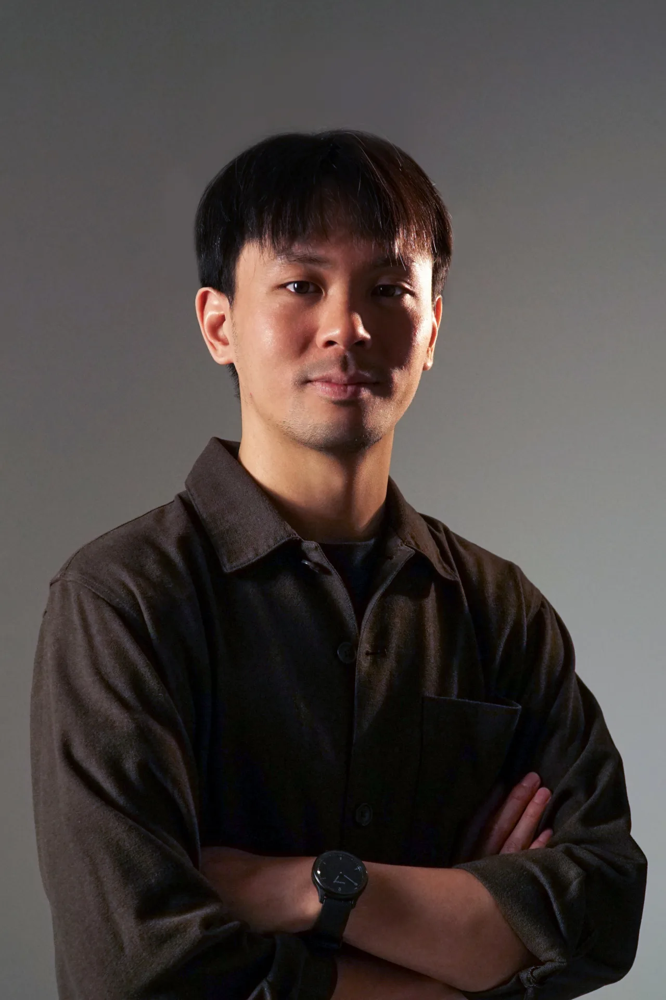
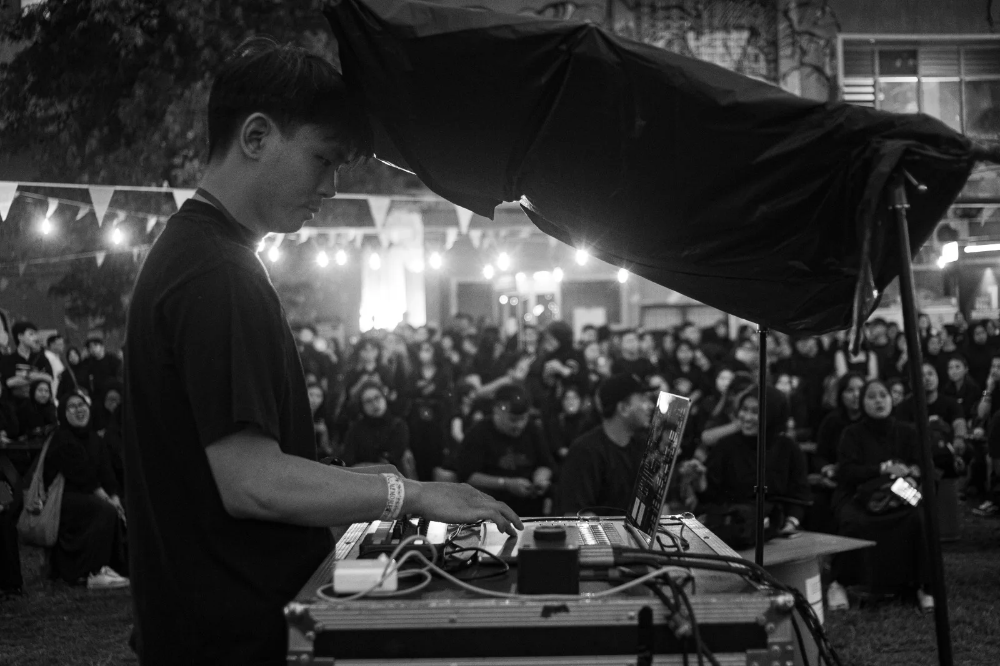

Stevie J. Sutanto


Biography


Stevie J. Sutanto (b. 1992) is an Indonesian composer and sound artist based in Jakarta. His practice and research focus on the intersection of artificial intelligence and sound processing. He is also interested in the critical use of laptops and augmented instruments in composition and performance. His works have been performed by Duo Amrein, Ensemble Modern, Grupo 20/21, Quatuor Tana, NAMES Ensemble, and Quatuor Bozzini at festivals and events worldwide, including Manila Composers Lab (MCL), Yogyakarta Contemporary Music Festival (YCMF), Ruang Suara: Frankfurt Lab, the Asian Composers League, Holland Festival, Ars Electronica Festival, Shanghai New Music Week, Crossroads'17, WeSA Audiovisual Festival, International Computer Music Conference (ICMC), Linux Audio Conference (LAC), New York City Electroacoustic Music Festival (NYCEMF), Seoul International Computer Music Festival (SICMF), and the Conference on AI Music Creativity (AIMC).
Publications
AIMC, Brussels
2025 Jazz in the Age of Algorithmic Alienation: AI as a Catalyst for Critical ImprovisationAIMC, Brussels
2025 An Intersection between Creative Process and Compositional Structure: Study of a Sketch of TwoJurnal SENI MUSIK
2025 Soundscapes of Papua: Cultural-based pedagogical approach through electroacoustic musicOrganised Sound
2023 Algorave Music Practice in Indonesia: Paguyuban AlgoraveOrganised Sound